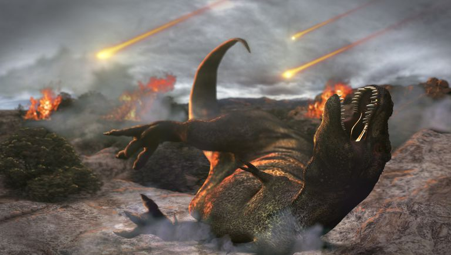

การสูญพันธุ์ไดโนเสาร์
Disclaimer ไดโนเสาร์ที่เรากล่าวถึงว่าสูญพันธ์ไปแล้วนั้น ไม่รวมพวก Avian Dinosaur ที่ได้เหลือรอดมาและกลายเป็นบรรพบุรุษของสัตว์ปีก (นก) ในปัจุบัน ใคร ๆ หลาย ๆ คนในที่นี้ก็อาจจะเคยได้ยินหรือเรียนมาว่า เมื่อราว 66 ล้านปีที่แล้ว เคยมีดาวเคราะห์น้อยขนาดยักษ์เดินทางมาพุ่งชนโลกจนเผ่าพันธุ์ของไดโนเสาร์และสัตว์สายพันธุ์อื่น ๆ อีก 75% ได้สูญสิ้นไป แต่ทว่าทฤษฎีนี้มีข้อเท็จจริงมากน้อยแค่ไหนกันแน่ ? เป็นไปได้หรือ ที่ธรรมชาติจะสามารถเป็นได้ทั้งผู้สร้างและผู้ทำลายในช่วงเวลาเดียวกัน เพราะถ้าหากไดโนเสาร์ไม่ได้สูญพันธุ์ไปแล้วละก็ บรรพบุรุษของเราที่เป็นสัตว์เลี้ยงลูกด้วยนมก็คงไม่อาจวิวัฒนาการขึ้นจนมีความหลากหลาย และกลายมาเป็นเผ่าพันธุ์มนุษย์อย่างในทุกวันนี้ได้เลยแม้แต่น้อย
หน้าแรก ถอยกลับ